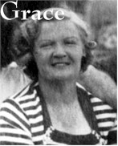

|  |
Grace (Garnett) Moody (1907-1974)
Grace Garnett was born on 14 August 1907 in Newport to Robert Garnett and Harriet Garnett (late Malkin, formerly Elliott). She married Arthur Moody on 21 June 1941 in Brough Register Office. They had no children, but spent time travelling. Grace died on 14 September 1974 in Brough. Arthur died on 16 December 1976 in Hull.
|